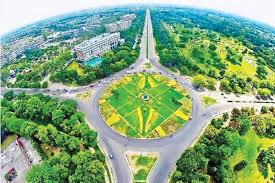
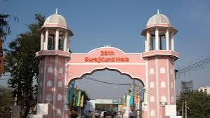
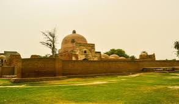
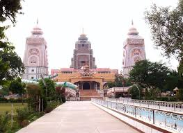
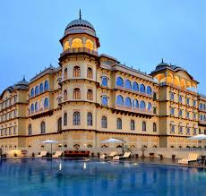
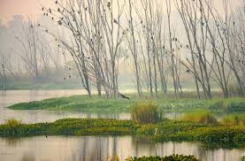
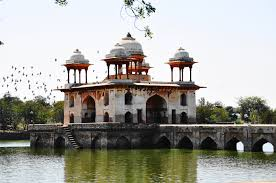

Tourist Places in Haryana
Major Cities and Urban Centers
Chandigarh

- Rock Garden
- Sukhna Lake
- Rose Garden
- Capitol Complex
- Sector 17 Plaza
Gurugram (Gurgaon)

- Kingdom of Dreams
- Cyber Hub
- Ambience Mall
- Aravalli Biodiversity Park
- Damdama Lake
- Sheetla Mata Mandir
Faridabad

- Surajkund (Famous for the Surajkund Mela)
- Badkhal Lake
- Raja Nahar Singh Palace (Ballabgarh Fort Palace)
Panipat

- Panipat Battlefields
- Panipat Museum
- Kabuli Bagh Mosque
- Tomb of Ibrahim Lodi
- Salar Gunj Gate
Hisar

- Firoz Shah Palace Complex
- Agroha Dham
- Lat Ki Masjid
- Deer Park
Karnal

- Karnal Lake
- Karna Lake
- Kalander Shah’s Tomb
Historical and Archaeological Sites
Kurukshetra

- Brahma Sarovar
- Jyotisar (Associated with the Bhagavad Gita)
- Kurukshetra Panorama and Science Centre
- Sheikh Chilli’s Tomb
- Sannihit Sarovar
Pinjore

- Pinjore Gardens (Yadavindra Gardens)
- Bhima Devi Temple Complex
Mahendragarh

- Dhosi Hill (Extinct Volcano)
Wildlife and Nature
Sultanpur National Park

Kalesar National Park

Bhindawas Wildlife Sanctuary

Pilgrimage and Religious Sites
Kurukshetra
- Brahma Sarovar
- Sannihit Sarovar
- Bhadrakali Temple
Narnaul

- Chor Gumbad
- Birbal Ka Chhatta
Adventure and Nature Activities
Morni Hills
- Nature Trails and Trekking
- Adventure Activities
Sultanpur National Park